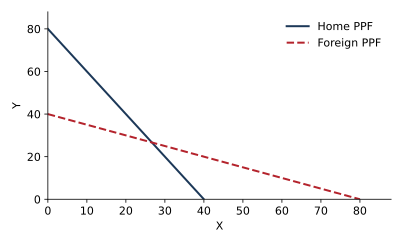
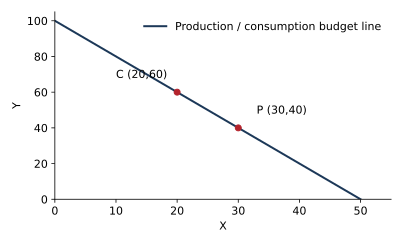
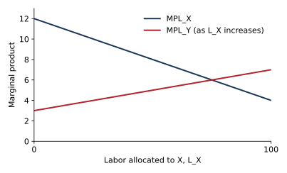
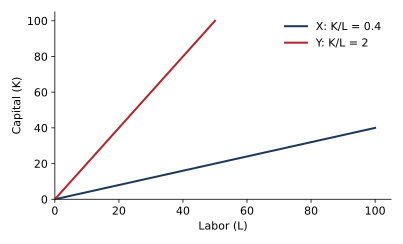
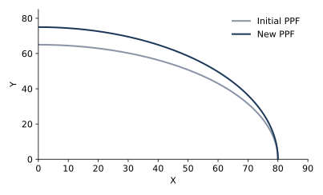
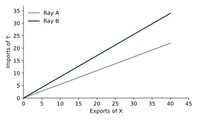
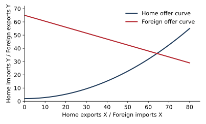

首頁 › 考試與習題 › 考試 這一頁逐題解析 115 學年度第 1 學期國際貿易期中考 （2026/10/28，翁永和老師）。全卷是英文選擇題，40 題、每題 2.5 分 ，範圍是第 1～5 章。
建議的用法：先不要看解答，把每一題當成模擬考寫一遍，點選項就會判斷對錯；寫完再按「顯示解答」看中文題意、解析與易錯提醒。每題解析最後都標出對應的章節，答錯的題目可以直接回去讀。
重點 這份考卷怎麼出題
觀念題 （約一半）：問某個理論「強調什麼、預測什麼、假設什麼」，例如重商主義、新新貿易理論、H–O 定理、斯托爾珀－薩繆爾森定理 、要素價格均等 定理。計算題 ：李嘉圖模型的機會成本 比較、生產可能線 上的產量、特定要素模型的勞動配置、實質工資、貿易條件 的變動率。讀圖題 ：生產可能線、預算線、邊際產值 線、要素使用比例射線、成長後的生產可能線、貿易條件射線、提供曲線 ，共 7 題。圖都依原卷重畫。題目常把課本的例子換數字、換方向（例如「X 是勞動密集」改成「X 是資本密集」），只背結論容易選反。
題號
考點
章
答案
1～5
貿易理論的分類、重商主義
第 1、2 章
C A D C D
6～15
李嘉圖模型：比較利益 、生產型態、生產可能線
第 2 章
C B A B A C D A C D
16～19
特定要素 模型：勞動配置、實質工資第 3 章
C D A C
20～33
H–O 模型與四大定理、實證
第 2、4 章
D A A B B A A A A C B C D C
34～40
經濟成長、貿易條件、提供曲線、悲慘成長
第 5 章
D A B C D A B
第 7 題（勞動自由移動時的工資條件）放在特定要素那一段一起講。
1.1 貿易理論的演進與重商主義這一段考的是第 1 章的「貿易理論的架構」與第 2 章開頭的重商主義：哪些理論是傳統的、新的、新新的，以及重商主義怎麼看財富與貿易。
考題：1.1 貿易理論的演進與重商主義 題目與選項是考卷的英文原文；中文題意、解析與易錯提醒是本站整理的，圖依原卷重畫。
1. Which of the following is a traditional trade theory?
(A) Heterogeneous-firm model (B) Strategic trade policy model (C) Ricardian model (D) Product life-cycle marketing model 顯示解答 中文題意
下列哪一個是傳統貿易理論？(A) 異質廠商模型 (B) 策略性貿易政策模型 (C) 李嘉圖模型 (D) 產品生命週期行銷模型
解析
第 1 章的貿易理論架構：傳統貿易理論 以完全競爭、固定規模報酬為前提，用國家之間的差異解釋貿易，包括李嘉圖模型（技術差異）、特定要素模型、H–O 模型（資源秉賦差異）。新貿易理論 加入規模經濟與不完全競爭；新新貿易理論 再把「同一產業裡的廠商不一樣」放進來。
(A) 錯。異質廠商模型是新新貿易理論。
(B) 錯。策略性貿易政策是不完全競爭下的政策分析，屬於新貿易理論之後的發展。
(C) 正確。李嘉圖模型是古典的傳統貿易理論。
(D) 錯。產品生命週期理論解釋產品在不同國家之間的生產移轉，不屬於傳統的比較利益模型。
即：傳統理論問「國家哪裡不同」，新理論問「規模與市場結構」，新新理論問「廠商哪裡不同」。
對應：1.3 節 。
易錯提醒
「傳統」指的是完全競爭、固定規模報酬的模型，不是指年代最早的就一定是傳統理論的重點；看到 firm（廠商）、strategic（策略）、scale（規模）通常就是新的理論。
2. What does new-new trade theory emphasize?
(A) Firm heterogeneity (B) National gold and silver holdings (C) Agricultural production only (D) Domestic birth rates 顯示解答 中文題意
新新貿易理論強調什麼？(A) 廠商的異質性 (B) 國家持有的金銀 (C) 只有農業生產 (D) 國內出生率
解析
新新貿易理論（new-new trade theory）把分析單位從國家、產業再往下拉到廠商 ：同一產業裡，生產力高的廠商才付得起出口的固定成本，所以只有一部分廠商出口。這就是廠商的異質性（firm heterogeneity）。
(A) 正確。
(B) 錯。金銀是重商主義衡量財富的方式。
(C) 錯。和農業無關。
(D) 錯。出生率不是貿易理論的核心變數。
即：新新貿易理論問的是「為什麼同一個產業裡，只有某些廠商在出口」。
對應：1.3 節 。
易錯提醒
新貿易理論強調規模經濟與產品差異化，新新貿易理論強調廠商異質性，兩者不要混。
3. What is a major difference between the traditional Ricardian model and new trade theory?
(A) The former considers only financial transactions (B) The latter excludes all firms (C) Both examine only tariff revenue (D) The former emphasizes productivity differences, while the latter may emphasize economies of scale 顯示解答 中文題意
傳統的李嘉圖模型和新貿易理論最主要的差別是什麼？(D) 前者強調生產力差異，後者可能強調規模經濟。
答案 (D) The former emphasizes productivity differences, while the latter may emphasize economies of scale
解析
李嘉圖模型的貿易原因是兩國的勞動生產力（技術）不同 ，形成比較利益；它假設固定規模報酬與完全競爭。新貿易理論說明：即使兩國完全相同，只要有規模經濟 ，各國專精生產部分產品、把量做大，平均成本就會下降，仍然有貿易的好處。老師在第 1 章用晶圓廠說明：蓋一座廠要先付龐大的固定成本，產量越大、每片分攤越少，所以要靠出口擴大市場。
(A) 錯。李嘉圖模型談的是商品貿易，不是金融交易。
(B) 錯。新貿易理論正是以廠商行為為核心。
(C) 錯。兩者都不是只看關稅收入。
(D) 正確。
即：李嘉圖說「因為不同所以交易」，新貿易理論說「就算一樣，做大也划算」。
對應：1.3 節 、2.9 節 。
易錯提醒
選項 (D) 用的是 may emphasize（可能強調），因為新貿易理論還包括產品差異化與不完全競爭，不只規模經濟。
4. With what did mercantilism generally associate national wealth?
(A) Consumer surplus (B) Marginal product of labor (C) Holdings of precious metals (D) Variety of imported goods 顯示解答 中文題意
重商主義通常把國家財富和什麼連在一起？(C) 持有的貴金屬。
答案 (C) Holdings of precious metals
解析
重商主義（mercantilism）認為國家的財富就是持有的金銀（貴金屬） ，所以主張多出口、少進口，用貿易順差把金銀留在國內。古典學派的挑戰是：財富應該用一國能消費的商品與勞務來衡量，而休姆的物價－金幣流動機制指出，順差帶來的金銀流入會推高國內物價，順差無法長期維持。
(A) 錯。消費者剩餘是後來的福利概念。
(B) 錯。邊際產量是生產理論的概念。
(C) 正確。
(D) 錯。重商主義主張限制進口，不會用進口品的多樣性衡量財富。
即：重商主義把「國庫裡有多少金銀」當成國家有多富。
對應：2.1 節 。
易錯提醒
重商主義追求的是貿易順差 ，不是貿易平衡；看到「precious metals」「gold and silver」就是它。
5. How did mercantilism view international trade?
(A) All countries necessarily benefit simultaneously (B) Competition does not exist (C) Trade necessarily raises wages in every country (D) A zero-sum game 顯示解答 中文題意
重商主義怎麼看國際貿易？(D) 零和賽局。
解析
全世界的金銀總量固定，一國用順差多賺到的金銀，就是別國少掉的金銀，所以重商主義把貿易看成零和賽局 （zero-sum game）：一方得、一方失。亞當斯密與李嘉圖的分工理論則說明，各國依絕對利益或比較利益分工，總產量增加，雙方可以同時得利，貿易是正和的。
(A) 錯。這是古典學派的看法，和重商主義相反。
(B) 錯。重商主義很重視國與國之間的競爭。
(C) 錯。重商主義關心的是金銀，不是工資。
(D) 正確。
即：財富的總量如果固定，你多我就少，這就是重商主義的零和觀點。
對應：2.1 節 。
易錯提醒
(A) 是古典學派的結論，題目問的是重商主義，方向剛好相反。
1.2 李嘉圖模型：比較利益與生產型態這一段是全卷計算最多的地方。所有題目都用同一套判斷：先算每個國家生產 X 的機會成本 \(\frac{a_{LX}}{a_{LY}}\)（生產一單位 X 要放棄幾單位 Y），機會成本低的國家在 X 有比較利益；再把世界價格 \(\frac{P_X}{P_Y}\) 拿來和機會成本比。
\[\frac{P_X}{P_Y}>\frac{a_{LX}}{a_{LY}}\ \Rightarrow\ \text{只生產 X},\qquad \frac{P_X}{P_Y}<\frac{a_{LX}}{a_{LY}}\ \Rightarrow\ \text{只生產 Y}\]
為什麼這樣比？生產一單位 X 的工資收入是 \(\frac{P_X}{a_{LX}}\)（一小時做出 \(\frac{1}{a_{LX}}\) 單位、每單位賣 \(P_X\)），生產 Y 是 \(\frac{P_Y}{a_{LY}}\)。勞動會流向每小時賺比較多的部門：\(\frac{P_X}{a_{LX}}>\frac{P_Y}{a_{LY}}\)，移項就是上面第一條式子。
考題：1.2 李嘉圖模型：比較利益與生產型態 題目與選項是考卷的英文原文；中文題意、解析與易錯提醒是本站整理的，圖依原卷重畫。
6. Why can trade occur even if Home has lower labor productivity in both goods?
(A) The less productive country necessarily exports both goods (B) Trade is determined only by gold holdings (C) Comparative advantage depends on relative rather than absolute costs (D) Wages must be identical across countries 顯示解答 中文題意
為什麼本國兩種商品的勞動生產力都比較低，仍然可以貿易？(C) 比較利益看的是相對成本，不是絕對成本。
答案 (C) Comparative advantage depends on relative rather than absolute costs
解析
本國兩樣都沒有絕對利益，但「落後的程度」不一樣：在落後比較少的那一樣，本國的機會成本比較低，就有比較利益。比較利益比的是機會成本 \(\frac{a_{LX}}{a_{LY}}\)，這是相對 的；本國的低生產力會反映在比較低的工資上，所以仍然可以在比較利益的商品上賣得比外國便宜。
(A) 錯。兩國各自出口有比較利益的那一樣，不可能一國兩樣都出口。
(B) 錯。這是重商主義的想法。
(C) 正確。
(D) 錯。李嘉圖模型裡兩國工資通常不同，相對工資介於兩國的生產力比之間。
即：沒有一樣贏，也一定有一樣「輸得比較少」，那一樣就是比較利益。
對應：2.3 節 。
易錯提醒
絕對利益比「每單位要幾小時」，比較利益比「做一單位要放棄多少另一樣」；題目說「兩樣都比較差」就是在提醒你改看比較利益。
8. Home requires 2 labor hours per unit of X and 6 per unit of Y; Foreign requires 4 hours for X and 8 for Y. If the world relative price \(P_X/P_Y\) is 0.4, which production pattern is consistent with competitive profit maximization?
(A) Home produces only X; Foreign produces only Y (B) Both countries produce only X (C) Home produces only Y; Foreign produces only X (D) Both countries produce only Y 顯示解答 中文題意
本國生產一單位 X 要 2 小時、Y 要 6 小時；外國 X 要 4 小時、Y 要 8 小時。世界相對價格 \(P_X/P_Y=0.4\) 時，哪一種生產型態符合完全競爭下的利潤最大化？
答案 (A) Home produces only X; Foreign produces only Y
解析
第一步，算兩國生產 X 的機會成本：
\[\text{本國}\ \frac{a_{LX}}{a_{LY}}=\frac{2}{6}\approx0.33,\qquad \text{外國}\ \frac{a^*_{LX}}{a^*_{LY}}=\frac{4}{8}=0.5\]
第二步，和世界價格 0.4 比：本國 \(0.4>0.33\)，X 每小時賺 \(\frac{0.4}{2}=0.2\)，Y 每小時賺 \(\frac{1}{6}\approx0.17\)（以 \(P_Y=1\) 計），所以只生產 X。外國 \(0.4<0.5\)，X 每小時賺 \(\frac{0.4}{4}=0.1\)，Y 每小時賺 \(\frac{1}{8}=0.125\)，所以只生產 Y。
(A) 正確。
(B) 錯。外國生產 X 每小時只賺 0.1，比生產 Y 少。
(C) 錯。方向相反。
(D) 錯。本國生產 Y 比 X 賺得少。
即：世界價格落在兩國機會成本之間，兩國就各自專業化在比較利益的商品。
對應：2.6 節 。
易錯提醒
先比機會成本、再比價格；不要只看「外國兩樣都比較慢」就以為外國什麼都不生產。
9. Home has 120 labor hours and unit labor requirements \(a_{LX}=2\) and \(a_{LY}=4\). If Home produces 30 units of X, what is the maximum feasible output of Y?
(A) 30 (B) 15 (C) 20 (D) 25 顯示解答 中文題意
本國有 120 小時勞動，\(a_{LX}=2\)、\(a_{LY}=4\)。生產 30 單位 X 時，Y 最多能生產多少？
解析
生產可能線就是勞動的限制式 \(a_{LX}Q_X+a_{LY}Q_Y=L\)：
\[2\times30+4\,Q_Y=120\ \Rightarrow\ 4\,Q_Y=60\ \Rightarrow\ Q_Y=15\]
生產 30 單位 X 用掉 60 小時，剩下 60 小時，每單位 Y 要 4 小時，所以最多 15 單位。
(A) 錯。30 是把剩下的 60 小時除以 2（X 的投入係數），用錯係數。
(B) 正確。
(C) 錯。20 沒有對應的算法。
(D) 錯。
即：先扣掉 X 用掉的勞動，剩下的全部拿去做 Y。
對應：2.4 節 。
易錯提醒
剩下的勞動要除以 Y 的投入係數 \(a_{LY}\)，不是 \(a_{LX}\)。
10. Suppose Home has \(a_{LX}=4\) and \(a_{LY}=2\), while Foreign has \(a^*_{LX}=3\) and \(a^*_{LY}=6\). Which range of \(P_X/P_Y\) permits strict gains from specialization based on comparative advantage?
(A) \(0.5 < P_X/P_Y < 2\) (B) \(2 < P_X/P_Y < 4\) (C) \(0.5 < P_X/P_Y < 1\) (D) \(1 < P_X/P_Y < 2\) 顯示解答 中文題意
本國 \(a_{LX}=4\)、\(a_{LY}=2\)，外國 \(a^*_{LX}=3\)、\(a^*_{LY}=6\)。世界相對價格落在哪個區間，兩國依比較利益專業化都有嚴格的利得？
答案 (A) \(0.5 < P_X/P_Y < 2\)
解析
\[\text{本國}\ \frac{a_{LX}}{a_{LY}}=\frac{4}{2}=2,\qquad \text{外國}\ \frac{a^*_{LX}}{a^*_{LY}}=\frac{3}{6}=0.5\]
外國的 X 機會成本低，外國出口 X、本國出口 Y。世界價格必須嚴格介於兩國的自給價格之間 ，兩國才都比自給自足好：外國賣 X 換到的 Y 比自己做多（\(P_X/P_Y>0.5\)），本國用 Y 換 X 比自己做便宜（\(P_X/P_Y<2\)）。等於某一國的自給價格時，那一國沒有利得。
(A) 正確。
(B)、(C)、(D) 錯。它們只是 (A) 的一部分或超出範圍；題目問的是完整的區間。
即：貿易條件要落在兩國的機會成本之間，雙方才都賺。
對應：2.6 節 。
易錯提醒
(D) 也在區間內，但不是完整的區間；題目問「哪個範圍允許」，要選兩國機會成本構成的整個區間。
11. The figure shows Home and Foreign PPFs with X on the horizontal axis and Y on the vertical axis. Which country has comparative advantage in X?

依原卷重畫：本國生產可能線（實線）通過 (0, 80) 與 (40, 0)，外國（虛線）通過 (0, 40) 與 (80, 0)。 (A) Home, because its X-intercept is smaller (B) Neither; both X-intercepts are equal (C) Foreign, because its opportunity cost of X is lower (D) Home, because its Y-intercept is smaller 顯示解答 中文題意
圖中是兩國的生產可能線（X 在橫軸、Y 在縱軸）。哪一國在 X 有比較利益？
答案 (C) Foreign, because its opportunity cost of X is lower
解析
直線生產可能線的斜率絕對值，就是 X 的機會成本（多做一單位 X 要放棄幾單位 Y）＝縱軸截距 ÷ 橫軸截距：
\[\text{本國}\ \frac{80}{40}=2,\qquad \text{外國}\ \frac{40}{80}=0.5\]
外國的線比較平，生產 X 只要放棄 0.5 單位 Y，機會成本低，所以外國在 X 有比較利益（本國在 Y 有比較利益）。
(A) 錯。截距小代表最多能做的 X 少，那是絕對產能，不是比較利益。
(B) 錯。兩國的 X 截距是 40 和 80，不相等。
(C) 正確。
(D) 錯。本國的 Y 截距是 80，比外國大；而且比較利益要看斜率，不是單看截距。
即：生產可能線越平，生產橫軸商品的機會成本越低。
對應：2.4 節 、2.5 節 。
易錯提醒
看圖判斷比較利益要看斜率 ，不能只看某一個截距的大小。
12. If Home produces X only and Foreign produces Y only, which inequality must hold for both choices to be strictly optimal under the Ricardian model?
(A) \(P_X/P_Y < a_{LX}/a_{LY}\) and \(P_X/P_Y > a^*_{LX}/a^*_{LY}\) (B) \(P_X/P_Y = 1\) in both countries (C) \(P_X/P_Y <\) both opportunity costs (D) \(a_{LX}/a_{LY} < P_X/P_Y < a^*_{LX}/a^*_{LY}\) 顯示解答 中文題意
本國只生產 X、外國只生產 Y，而且這兩個選擇都是嚴格最適，必須滿足哪一個不等式？
答案 (D) \(a_{LX}/a_{LY} < P_X/P_Y < a^*_{LX}/a^*_{LY}\)
解析
本國只生產 X：X 每小時的收入比 Y 高，\(\frac{P_X}{a_{LX}}>\frac{P_Y}{a_{LY}}\)，移項得 \(\frac{P_X}{P_Y}>\frac{a_{LX}}{a_{LY}}\)。外國只生產 Y：\(\frac{P_X}{a^*_{LX}}<\frac{P_Y}{a^*_{LY}}\)，即 \(\frac{P_X}{P_Y}<\frac{a^*_{LX}}{a^*_{LY}}\)。兩個合起來：
\[\frac{a_{LX}}{a_{LY}}<\frac{P_X}{P_Y}<\frac{a^*_{LX}}{a^*_{LY}}\]
(A) 錯。不等號方向全反，那會讓本國只生產 Y、外國只生產 X。
(B) 錯。價格等於 1 沒有特別意義。
(C) 錯。價格低於兩國的機會成本，兩國都只生產 Y。
(D) 正確。
即：價格高過本國的機會成本、低過外國的機會成本，本國做 X、外國做 Y。
對應：2.6 節 。
易錯提醒
「strictly」表示用嚴格不等號；等號成立時，那一國兩樣都可以生產（無差異）。
13. At a common world price \(P_X/P_Y=1\), Home has \(a_{LX}=2\), \(a_{LY}=8\) and Foreign has \(a^*_{LX}=6\), \(a^*_{LY}=3\). Which statement is correct?
(A) Home specializes in X, Foreign in Y (B) Home specializes in Y, Foreign in X (C) Both countries specialize in X (D) Both countries are indifferent 顯示解答 中文題意
世界相對價格 \(P_X/P_Y=1\)，本國 \(a_{LX}=2\)、\(a_{LY}=8\)，外國 \(a^*_{LX}=6\)、\(a^*_{LY}=3\)。哪一個敘述正確？
答案 (A) Home specializes in X, Foreign in Y
解析
\[\text{本國}\ \frac{2}{8}=0.25<1\ \Rightarrow\ \text{只生產 X},\qquad \text{外國}\ \frac{6}{3}=2>1\ \Rightarrow\ \text{只生產 Y}\]
用每小時收入驗算（\(P_X=P_Y=1\)）：本國 X 每小時 \(\frac{1}{2}\)、Y 每小時 \(\frac{1}{8}\)，做 X；外國 X 每小時 \(\frac{1}{6}\)、Y 每小時 \(\frac{1}{3}\)，做 Y。
(A) 正確。
(B) 錯。方向相反。
(C) 錯。外國做 X 每小時只賺 \(\frac{1}{6}\)，比做 Y 少。
(D) 錯。只有價格剛好等於某國的機會成本時，那一國才無差異。
即：價格 1 介於 0.25 和 2 之間，兩國各自專業化。
對應：2.6 節 。
易錯提醒
不要直接比 \(a_{LX}\) 和 \(a^*_{LX}\) 的大小（那是絕對利益），要比各國自己的 \(\frac{a_{LX}}{a_{LY}}\) 和價格。
14. The diagram shows a production point P=(30,40) and consumption point C=(20,60) on the same trade-price line. What is the implied relative price \(P_X/P_Y\)?

依原卷重畫：生產點 P (30, 40) 與消費點 C (20, 60) 在同一條預算線上，預算線通過 (0, 100) 與 (50, 0)。 (A) 0.5 (B) 1 (C) 2 (D) 3 顯示解答 中文題意
生產點 P＝(30, 40) 與消費點 C＝(20, 60) 在同一條貿易價格線上。這條線隱含的相對價格 \(P_X/P_Y\) 是多少？
解析
預算線的斜率絕對值就是 \(\frac{P_X}{P_Y}\)。從 P 走到 C：X 少了 10（出口 10 單位 X），Y 多了 20（進口 20 單位 Y）：
\[\frac{P_X}{P_Y}=\frac{\Delta Y}{\Delta X}=\frac{60-40}{30-20}=\frac{20}{10}=2\]
意思是 1 單位 X 可以換 2 單位 Y。也可以用截距驗算：線通過 (0, 100) 與 (50, 0)，斜率 \(\frac{100}{50}=2\)。這就是貿易三角形 ：底邊是出口 10，高是進口 20，斜邊的斜率是貿易條件。
(A) 錯。0.5 是把比例倒過來（\(\frac{10}{20}\)），那是 \(\frac{P_Y}{P_X}\)。
(B) 錯。
(C) 正確。
(D) 錯。
即：出口換到的進口除以出口量，就是相對價格。
對應：2.6 節 、5.3 節 。
易錯提醒
縱軸是 Y 的時候，斜率（\(\frac{\Delta Y}{\Delta X}\)）的絕對值是 \(\frac{P_X}{P_Y}\)，不是 \(\frac{P_Y}{P_X}\)。
15. If a country is strictly more productive in both goods, which additional information is sufficient to determine the direction of its comparative advantage?
(A) The country's total population (B) The nominal wage level alone (C) The absolute volume of imports (D) Unit labor requirements for both goods in both countries 顯示解答 中文題意
一國兩樣商品的生產力都比較高，還需要什麼資料才足以判斷它的比較利益在哪一樣？
答案 (D) Unit labor requirements for both goods in both countries
解析
比較利益要比較兩國的機會成本 \(\frac{a_{LX}}{a_{LY}}\) 與 \(\frac{a^*_{LX}}{a^*_{LY}}\)，需要的正是兩國兩種商品的單位勞動投入 ，四個數字。
(A) 錯。人口影響產能的大小，不影響機會成本。
(B) 錯。名目工資單獨看不出相對成本。
(C) 錯。進口量是結果，不是判斷的依據。
(D) 正確。
即：比較利益只需要四個投入係數，算出兩國的機會成本來比。
對應：2.3 節 。
易錯提醒
「更有生產力」只告訴你絕對利益，判斷比較利益還要知道兩樣各領先多少。
1.3 特定要素模型：勞動配置與所得分配特定要素模型裡，勞動可以在兩個部門之間移動，資本只能用在 X、土地只能用在 Y。勞動會一直移動到兩個部門的邊際產值相等 ，這就是工資：
\[w=P_X\cdot MPL_X=P_Y\cdot MPL_Y\]
所以 X 漲價時，勞動移向 X，工資上漲但漲得比 \(P_X\) 少：以 X 計的實質工資下降、以 Y 計的上升；X 的特定要素（資本）一定得利，Y 的特定要素（土地）一定受損。
考題：1.3 特定要素模型：勞動配置與所得分配 題目與選項是考卷的英文原文；中文題意、解析與易錯提醒是本站整理的，圖依原卷重畫。
7. When labor moves freely between sectors, what condition holds for equilibrium wages?
(A) \(MPL_X = MPL_Y\) necessarily (B) \(P_X \times MPL_X = P_Y \times MPL_Y\) (C) \(P_X = P_Y\) necessarily (D) \(K = T\) necessarily 顯示解答 中文題意
勞動可以在部門之間自由移動時，均衡工資滿足什麼條件？
答案 (B) \(P_X \times MPL_X = P_Y \times MPL_Y\)
解析
廠商會雇用勞動到邊際產值等於工資：\(w=P_X\cdot MPL_X\)、\(w=P_Y\cdot MPL_Y\)。勞動可以自由移動，兩個部門的工資一定相同（不然勞動會往高工資的部門跑），所以兩個部門的邊際產值 相等。
(A) 錯。邊際產量要相等，必須兩種商品的價格剛好相同；一般情況下相等的是邊際產值。
(B) 正確。
(C) 錯。價格由市場決定，不需要相等。
(D) 錯。資本和土地是兩種特定要素，數量沒有關係。
即：勞動跑到兩邊「一小時賣得的錢」一樣多才停下來。
對應：3.3 節 。
易錯提醒
相等的是 \(P\times MPL\)（邊際產值），不是 \(MPL\)（邊際產量）本身。
16. In a specific factors model with 100 workers, \(P_X=P_Y=1\), \(MPL_X=12-0.08L_X\) and \(MPL_Y=3+0.04L_X\) (because \(L_Y=100-L_X\)). What is equilibrium \(L_X\)?

依原卷重畫：橫軸是分到 X 的勞動 \(L_X\)，往右下的線是 \(MPL_X\)，往右上的線是以 \(L_X\) 表示的 \(MPL_Y\)。 (A) 50 (B) 60 (C) 75 (D) 90 顯示解答 中文題意
特定要素模型，勞動共 100 人，\(P_X=P_Y=1\)，\(MPL_X=12-0.08L_X\)，\(MPL_Y=3+0.04L_X\)（因為 \(L_Y=100-L_X\)）。均衡的 \(L_X\) 是多少？
解析
均衡條件是 \(P_X\cdot MPL_X=P_Y\cdot MPL_Y\)，價格都是 1，所以兩條線的交點：
\[12-0.08L_X=3+0.04L_X\ \Rightarrow\ 9=0.12L_X\ \Rightarrow\ L_X=75\]
\(L_Y=100-75=25\)，工資 \(w=12-0.08\times75=6\)，驗算 \(3+0.04\times75=6\)。為什麼 \(MPL_Y\) 寫成 \(L_X\) 的遞增函數？因為 \(L_X\) 越大、\(L_Y\) 越小，Y 部門的勞動變少，邊際產量就越高——這就是雙原點圖的讀法：同一條橫軸，從左邊量 \(L_X\)、從右邊量 \(L_Y\)。
(A) 錯。\(L_X=50\) 時 \(MPL_X=8>MPL_Y=5\)，勞動還會往 X 移。
(B) 錯。\(L_X=60\) 時 \(7.2>5.4\)，還沒到均衡。
(C) 正確。
(D) 錯。\(L_X=90\) 時 \(4.8<6.6\)，勞動會往 Y 移回去。
即：兩條邊際產值線的交點就是勞動不再移動的位置。
對應：3.3 節 。
易錯提醒
題目已經把 \(MPL_Y\) 換成 \(L_X\) 的函數，直接解交點即可，不要再代一次 \(100-L_X\)。
17. With X-specific capital and Y-specific land, \(P_X\) rises while \(P_Y\) is fixed. Which statement is necessarily true in the standard specific factors model?
(A) The nominal wage rises by more than \(P_X\) (B) The real wage measured in X rises (C) Landowners gain in terms of both goods (D) The nominal wage rises proportionally less than \(P_X\) 顯示解答 中文題意
資本是 X 的特定要素、土地是 Y 的特定要素。\(P_X\) 上漲、\(P_Y\) 不變時，哪一個敘述在標準的特定要素模型裡一定成立？
答案 (D) The nominal wage rises proportionally less than \(P_X\)
解析
\(P_X\) 上漲讓 X 部門的邊際產值線按比例往上張開，勞動從 Y 移向 X，新的交點工資上漲，但因為 \(MPL_X\) 隨著 X 雇用增加而下降，工資的漲幅小於 \(P_X\) 的漲幅：
\[0<\frac{\Delta w}{w}<\frac{\Delta P_X}{P_X}\]
所以以 X 計的實質工資 \(\frac{w}{P_X}\) 下降、以 Y 計的 \(\frac{w}{P_Y}\) 上升，勞工得失不確定。資本家（X 的特定要素）兩種商品計都得利；地主（Y 的特定要素）兩種商品計都受損。
(A) 錯。工資漲幅小於 \(P_X\)。
(B) 錯。以 X 計的實質工資下降。
(C) 錯。地主是受損的一方。
(D) 正確。
即：漲價商品的特定要素一定賺，另一個特定要素一定賠，勞工夾在中間。
對應：3.4 節 。
易錯提醒
工資會上漲（名目），但漲得比 \(P_X\) 少；「工資上漲」不等於「以 X 計的實質工資上漲」。
18. In the specific factors model, total labor is fixed. If \(P_X\) rises and labor moves from Y to X, which changes help restore labor-market equilibrium?
(A) \(MPL_X\) falls and \(MPL_Y\) rises (B) \(MPL_X\) rises and \(MPL_Y\) falls (C) Both marginal products fall (D) Both marginal products rise 顯示解答 中文題意
特定要素模型，勞動總量固定。\(P_X\) 上漲、勞動從 Y 移到 X，哪些變化讓勞動市場回到均衡？
答案 (A) \(MPL_X\) falls and \(MPL_Y\) rises
解析
\(P_X\) 上漲後，X 部門的邊際產值 \(P_X\cdot MPL_X\) 比較高，勞動流入 X。X 的資本固定、勞動變多，邊際報酬遞減 使 \(MPL_X\) 下降；Y 的土地固定、勞動變少，\(MPL_Y\) 上升。兩邊一降一升，直到 \(P_X\cdot MPL_X=P_Y\cdot MPL_Y\) 再度成立。
(A) 正確。
(B) 錯。方向相反。
(C) 錯。Y 部門勞動變少，邊際產量會上升。
(D) 錯。X 部門勞動變多，邊際產量會下降。
即：人多的部門每人產量下降，人少的部門每人產量上升，兩邊重新拉平。
對應：3.2 節 。
易錯提醒
這裡說的是邊際「產量」（不含價格）。X 的邊際「產值」最後也是下降回到新的工資水準。
19. Suppose nominal wages rise 10%, \(P_X\) rises 20%, and \(P_Y\) is unchanged. What happens to the real wage measured in X and in Y?
(A) Both rise 10% (B) X rises 10%, Y falls 8.3% (C) X falls about 8.3%, Y rises 10% (D) Both fall about 8.3% 顯示解答 中文題意
名目工資上漲 10%、\(P_X\) 上漲 20%、\(P_Y\) 不變。以 X 和以 Y 計的實質工資各怎麼變？
答案 (C) X falls about 8.3%, Y rises 10%
解析
\[\frac{w}{P_X}:\ \frac{1.10}{1.20}=0.9167\ \Rightarrow\ \text{約}-8.3\%,\qquad \frac{w}{P_Y}:\ \frac{1.10}{1.00}=1.10\ \Rightarrow\ +10\%\]
這正是特定要素模型 X 漲價時的結果：工資漲幅介於兩種商品的價格漲幅之間，勞工以 X 計變窮、以 Y 計變富。
(A) 錯。以 X 計是下降。
(B) 錯。方向相反。
(C) 正確。
(D) 錯。以 Y 計是上升。
即：實質工資＝名目工資 ÷ 價格，分母漲得比分子多就下降。
對應：3.4 節 。
易錯提醒
不能用 10%－20%＝－10% 近似；正確的算法是 \(\frac{1.10}{1.20}-1\approx-8.3\%\)。
1.4 H–O 模型與四大定理這一段占 14 題，是全卷最大的一塊。四大定理各自回答一個問題：
定理
給定什麼變動
預測什麼
H–O 定理（要素比例定理）
兩國資源秉賦 不同
出口密集使用本國豐富要素的商品
斯托爾珀－薩繆爾森定理
商品相對價格變動
密集使用的要素實質報酬上升、另一要素下降
雷布津斯基定理 某一要素數量增加（價格不變）
密集使用它的商品產量增加、另一商品減少
要素價格均等定理
自由貿易使商品價格相同
兩國的要素價格也相同（在嚴格條件下）
考題：1.4 H–O 模型與四大定理 題目與選項是考卷的英文原文；中文題意、解析與易錯提醒是本站整理的，圖依原卷重畫。
20. Home has K=240 and L=120, while Foreign has K=180 and L=180. Good X uses K/L=2.5 and Y uses K/L=0.5 at common factor prices. Under the standard H–O assumptions, what does Home export?
(A) Y (B) Both goods equally (C) Neither good (D) X 顯示解答 中文題意
本國 K＝240、L＝120，外國 K＝180、L＝180。在相同的要素價格下，X 的 K/L＝2.5、Y 的 K/L＝0.5。在標準 H–O 假設下，本國出口什麼？
解析
第一步，判斷要素豐富（看國家的 K/L）：
\[\text{本國}\ \frac{240}{120}=2>\text{外國}\ \frac{180}{180}=1\]
本國是資本豐富 的國家。注意要比的是比例，不是絕對量：本國的資本 240 比外國 180 多，勞動 120 比外國 180 少，但即使兩個都比較多，也要看比例。
第二步，判斷要素密集（看商品的 K/L）：X 是 2.5、Y 是 0.5，X 是資本密集 。
第三步，H–O 定理：出口密集使用本國豐富要素的商品，所以本國出口 X、進口 Y。
(A) 錯。Y 是勞動密集，由勞動豐富的外國出口。
(B)、(C) 錯。兩國的要素比例不同，就會有比較利益與貿易。
(D) 正確。
即：資本多的國家（按比例），出口用資本多的商品。
對應：4.5 節 。
易錯提醒
「豐富」看國家、「密集」看商品，兩個都是比例的概念；不要拿本國的 K/L＝2 去和 X 的 2.5 比。
21. The figure shows factor-use rays at common factor prices. Which statement is correct?

依原卷重畫：橫軸勞動 L、縱軸資本 K；X 的射線 K/L＝0.4，Y 的射線 K/L＝2。 (A) X is labor-intensive relative to Y (B) Y is labor-intensive relative to X (C) X and Y have identical factor intensities (D) Factor intensities cannot be compared 顯示解答 中文題意
圖中是相同要素價格下兩種商品的要素使用比例射線。哪一個敘述正確？
答案 (A) X is labor-intensive relative to Y
解析
射線的斜率就是 \(\frac{K}{L}\)。X 的射線比較平（\(\frac{K}{L}=0.4\)），每單位勞動搭配的資本比較少；Y 比較陡（\(\frac{K}{L}=2\)）。所以 X 是勞動密集 、Y 是資本密集。
(A) 正確。
(B) 錯。Y 是資本密集。
(C) 錯。兩條射線的斜率不同。
(D) 錯。題目已經說明是在相同的要素價格 下比較，可以比較。
即：縱軸放資本時，射線越平越勞動密集，越陡越資本密集。
對應：4.2 節 。
易錯提醒
密集度要在相同的要素價格（相同的 \(\frac{w}{r}\)）下比較；H–O 模型也假設不會發生要素密集度逆轉。
22. MacDougall compared export ratios and labor productivity ratios for the United States and the United Kingdom in order to test the
(A) Ricardian theory. (B) the Heckscher-Ohlin theory. (C) the specific factor hypothesis. (D) All of the above. 顯示解答 中文題意
MacDougall 比較美國和英國的出口比與勞動生產力比，是為了檢驗哪一個理論？
解析
第 2 章的實證圖：MacDougall 用 25 個產業的資料，橫軸是美國對英國的勞動生產力比，縱軸是兩國的出口比。結果生產力比越高的產業，美國的出口相對越多，支持李嘉圖模型 「生產力差異決定比較利益」的預測。
(A) 正確。
(B) 錯。檢驗 H–O 理論的是李昂提夫（Leontief）。
(C) 錯。特定要素模型不是用這組資料檢驗的。
(D) 錯。
即：拿「生產力比」來解釋「出口比」，檢驗的就是李嘉圖。
對應：2.9 節 。
易錯提醒
MacDougall 對應李嘉圖（生產力），李昂提夫對應 H–O（要素秉賦），兩個實證不要對調。
23. Leontief's results can be interpreted as
(A) evidence against the Ricardian model. (B) evidence against the Heckscher-Ohlin model. (C) evidence against the specific factor model. (D) none of the above. 顯示解答 答案 (B) evidence against the Heckscher-Ohlin model.
解析
美國被認為是資本豐富的國家，依 H–O 定理應該出口資本密集的商品。李昂提夫用 1947 年的投入產出表計算，發現美國進口替代品 的資本勞動比反而比出口品高，也就是美國出口的是相對勞動密集的商品，和 H–O 的預測相反，稱為李昂提夫矛盾（Leontief paradox）。第 4 章介紹了幾種解釋：人力資本、天然資源、需求偏好、要素密集度逆轉、關稅結構等。
(A) 錯。李昂提夫檢驗的不是李嘉圖模型。
(B) 正確。
(C) 錯。
(D) 錯。
即：資本多的美國卻出口勞動密集品，和 H–O 的預測相反。
對應：4.8 節 。
易錯提醒
李昂提夫比的是「出口品」和「進口替代品」的資本勞動比；他用的是美國自己生產進口替代品的資料，不是外國的生產資料。
24. What does the Rybczynski Theorem primarily explain?
(A) How changes in commodity prices affect factor prices. (B) How changes in factor endowments affect output levels. (C) How international trade equalizes factor prices. (D) How differences in technology determine comparative advantage. 顯示解答 答案 (B) How changes in factor endowments affect output levels.
解析
雷布津斯基定理（Rybczynski theorem）：在商品價格不變下，某一要素的數量增加，會使密集使用該要素的商品產量增加 ，另一商品產量減少 。它連結的是「要素秉賦 → 產量」。
(A) 錯。這是斯托爾珀－薩繆爾森定理（商品價格 → 要素價格）。
(B) 正確。
(C) 錯。這是要素價格均等定理。
(D) 錯。這是李嘉圖模型。
即：雷布津斯基看「要素變多」，斯托爾珀－薩繆爾森看「商品漲價」。
對應：4.4 節 。
易錯提醒
四大定理各自的「給定什麼、預測什麼」要記清楚，這類題目幾乎都是把四個定理互換當選項。
25. In a two-good economy, steel is capital-intensive and textiles are labor-intensive. If the country's capital stock increases while goods prices remain constant, which result is predicted?
(A) Steel output rises, and textile output falls. (B) Steel output falls, and textile output rises. (C) Both steel and textile outputs rise. (D) Both steel and textile outputs fall. 顯示解答 中文題意
鋼鐵是資本密集、紡織是勞動密集。資本存量增加、商品價格不變時，會有什麼結果？
答案 (A) Steel output rises, and textile output falls.
解析
商品價格不變，要素價格（\(\frac{w}{r}\)）就不變，兩個產業的 K/L 也不變。新增的資本要全部被雇用，只能讓資本密集的鋼鐵擴張；鋼鐵擴張時每單位資本要搭配一些勞動，這些勞動只能從紡織業移出來，紡織業因此縮減 。這是雷布津斯基定理，鋼鐵的產量增加幅度甚至大於資本增加的幅度（放大效果）。
(A) 正確。
(B) 錯。方向相反。
(C) 錯。兩者都增加是價格可以變動、或兩種要素都增加時才可能；價格固定時，另一個產業一定縮減。
(D) 錯。
即：多出來的資本要被用掉，只能讓資本密集的產業擴張，並從另一個產業挖勞動過來。
對應：4.4 節 。
易錯提醒
很多人直覺會選 (C)「資源變多，兩樣都多做」。關鍵是題目說價格不變 ，要素比例被鎖住，另一個產業只能讓出勞動。
26. What is the central prediction of the Heckscher–Ohlin Theorem?
(A) Countries export goods that use their relatively abundant factors intensively. (B) Countries export goods that use their relatively scarce factors intensively. (C) Countries export all goods for which domestic demand is high. (D) Countries with identical factor endowments cannot trade. 顯示解答 答案 (A) Countries export goods that use their relatively abundant factors intensively.
解析
H–O 定理（要素比例定理）：一國出口密集使用其相對豐富 要素的商品，進口密集使用其相對稀少要素的商品。豐富的要素比較便宜，用它密集生產的商品自給價格就比較低，形成比較利益。
(A) 正確。
(B) 錯。方向相反。
(C) 錯。國內需求高的商品反而可能進口；H–O 假設兩國需求相同（齊序且相同的偏好），讓貿易只來自秉賦差異。
(D) 錯。秉賦相同時 H–O 不會產生貿易，但仍可能因為規模經濟等原因而貿易，「cannot trade」說得太絕對。
即：什麼要素多，就出口用那種要素多的東西。
對應：4.5 節 。
易錯提醒
「relatively」很重要：比的是兩國的要素比例，不是絕對數量。
27. Which assumption is commonly used in the basic H-O Model to isolate the effects of factor endowments on trade?
(A) Countries have identical production technologies but different relative factor endowments. (B) Countries have identical factor endowments but completely different technologies. (C) All goods require only labor for production. (D) Consumers in every country have entirely different preferences. 顯示解答 中文題意
基本的 H–O 模型為了把「要素秉賦」對貿易的影響單獨分離出來，通常採用哪一個假設？
答案 (A) Countries have identical production technologies but different relative factor endowments.
解析
第 4 章開頭：H–O 模型要「隔離」的貿易原因是資源秉賦，所以把其他可能造成貿易的差異都關掉：兩國技術相同 、偏好相同且齊序 、固定規模報酬、完全競爭，只留下資源比例不同 。這樣產生的貿易就只能歸因於秉賦。
(A) 正確。
(B) 錯。這是把李嘉圖的原因放進來，剛好相反。
(C) 錯。只有勞動是李嘉圖模型；H–O 有兩種要素。
(D) 錯。偏好不同會變成另一個貿易原因，H–O 反而假設偏好相同。
即：只讓「資源比例」不同，其他通通一樣，才看得出秉賦的影響。
對應：4.1 節 。
易錯提醒
老師在課堂上強調每一條假設各自擋住一條貿易管道；題目問「isolate」就是在問這件事。
28. What is the main prediction of the Stolper–Samuelson Theorem?
(A) An increase in a good's relative price raises the real return to the factor used intensively in producing that good and lowers the real return to the other factor. (B) An increase in a good's relative price raises the real returns to all factors equally. (C) Changes in commodity prices have no effect on factor returns. (D) International trade always increases the real income of every factor owner. 顯示解答 答案 (A) An increase in a good's relative price raises the real return to the factor used intensively in producing that good and lowers the real return to the other factor.
解析
斯托爾珀－薩繆爾森定理（Stolper–Samuelson theorem）：某商品的相對價格上升，密集使用於該商品的要素，實質報酬上升 （而且以兩種商品計都上升）；另一要素的實質報酬下降 。這叫放大效果：要素價格的變動幅度大於商品價格的變動幅度。
(A) 正確。
(B) 錯。兩種要素一升一降，不會同時上升。
(C) 錯。商品價格正是透過這個定理影響要素報酬。
(D) 錯。貿易會讓稀少要素的擁有者受損。
即：哪個商品漲價，密集用在它身上的要素就變富，另一個要素變窮。
對應：4.6 節 。
易錯提醒
和特定要素模型不同：H–O 下兩種要素都能移動，結果是一升一降、方向確定；特定要素模型裡，可移動的勞動得失不確定。
29. What does the Stolper–Samuelson Theorem imply about the distributional effects of international trade?
(A) International trade always benefits every worker and every capital owner. (B) International trade has no effect on income distribution. (C) Changes in goods prices can benefit owners of one factor while harming owners of another factor. (D) International trade benefits only consumers and never affects producers. 顯示解答 中文題意
斯托爾珀－薩繆爾森定理對國際貿易的所得分配效果有什麼含意？
答案 (C) Changes in goods prices can benefit owners of one factor while harming owners of another factor.
解析
貿易讓出口品的相對價格上升、進口品下降。依斯托爾珀－薩繆爾森定理，本國豐富要素 （密集用在出口品）的擁有者得利，稀少要素 的擁有者受損。所以整體雖然有貿易利得，但不是每個人都得利，這也是為什麼貿易總有人支持、有人反對。第 4 章的潛在補償：得利者的利得大於受損者的損失，理論上可以補償後人人都更好。
(A) 錯。稀少要素會受損。
(B) 錯。
(C) 正確。
(D) 錯。生產者（要素擁有者）的報酬會改變。
即：貿易把餅做大，但切餅的方式會改變，有人分到的變少。
對應：3.5 節 、4.6 節 。
易錯提醒
「國家整體得利」和「每個人都得利」是兩件事，選項裡出現 always、every 通常是錯的。
考題：1.4 H–O 模型與四大定理 題目與選項是考卷的英文原文；中文題意、解析與易錯提醒是本站整理的，圖依原卷重畫。
30. What is the main prediction of the Factor Price Equalization (FPE) Theorem?
(A) All countries will have identical quantities of labor and capital. (B) Free trade in goods can equalize factor prices across countries under specific assumptions. (C) All countries will produce the same quantities of every good. (D) Workers and capital must move freely across national borders for wages to become equal. 顯示解答 答案 (B) Free trade in goods can equalize factor prices across countries under specific assumptions.
解析
要素價格均等定理（factor price equalization theorem）：在 H–O 的假設下，只靠商品自由貿易 （要素不能跨國移動），兩國的商品價格相同，就會使兩國的工資與租金也相同。邏輯鎖鏈是：商品價格相同 → 相同技術下要素價格比 \(\frac{w}{r}\) 相同 → 要素價格的絕對水準也相同。商品貿易等於間接交換了要素。
(A) 錯。要素數量不會變得一樣。
(B) 正確。
(C) 錯。各國仍然生產不同的組合。
(D) 錯。定理的重點正是不需要 要素跨國移動。
即：商品可以替要素「出國」，所以要素本身不動，價格也會被拉平。
對應：4.7 節 。
易錯提醒
(D) 是最常見的錯：要素價格均等是商品貿易的結果，不需要勞動或資本跨國移動。
31. Which of the following is a key assumption supporting factor price equalization in the standard H-O Model?
(A) Countries use completely different production technologies. (B) International trade in goods is prohibited. (C) Countries have access to the same technologies and face the same goods prices while producing both goods. (D) Every country specializes completely in one good. 顯示解答 中文題意
標準 H–O 模型裡，支持要素價格均等的關鍵假設是哪一個？
答案 (C) Countries have access to the same technologies and face the same goods prices while producing both goods.
解析
要素價格均等的鎖鏈需要三個條件：相同的技術 （同一組商品價格對應同一組要素價格）、相同的商品價格 （自由貿易、沒有運輸成本與關稅）、兩國都生產兩種商品 （不完全專業化，兩個零利潤條件同時成立，才能解出唯一的 \(w\) 和 \(r\)）。
(A) 錯。技術不同，相同的商品價格會對應不同的要素價格。
(B) 錯。沒有商品貿易，價格就不會相同。
(C) 正確。
(D) 錯。完全專業化時，只剩一個零利潤條件，解不出唯一的要素價格。
即：同技術、同價格、兩樣都做，要素價格才會被拉平。
對應：4.7 節 。
易錯提醒
「兩國都生產兩種商品」（不完全專業化）是常被忘記的條件，也是第 33 題的考點。
32. Under the Stolper–Samuelson theorem, if X is labor-intensive and \(P_X\) rises relative to \(P_Y\), which outcome follows (assuming both goods continue to be produced)?
(A) Real return to capital rises (B) Both factor returns rise in real terms (C) Real wage falls in both goods (D) Real wage rises in terms of both goods 顯示解答 中文題意
依斯托爾珀－薩繆爾森定理，若 X 是勞動密集、\(P_X\) 相對 \(P_Y\) 上升（兩種商品都繼續生產），會有什麼結果？
答案 (D) Real wage rises in terms of both goods
解析
X 漲價，密集用在 X 的要素是勞動 ，所以實質工資上升，而且以兩種商品計都上升；資本的實質報酬下降。放大效果寫成變動率：
\[\hat w>\hat P_X>\hat P_Y>\hat r\]
工資漲得比 \(P_X\) 多，所以 \(\frac{w}{P_X}\) 和 \(\frac{w}{P_Y}\) 都上升。
(A) 錯。資本的實質報酬下降。
(B) 錯。一升一降。
(C) 錯。方向相反。
(D) 正確。
即：勞動密集的商品漲價，勞工兩種商品都買得更多。
對應：4.6 節 。
易錯提醒
這題把課本「資本密集品漲價」的例子換成勞動密集，選 (A) 的人多半是背了「漲價 → 資本得利」的結論。先看漲價商品密集用哪個要素。
和第 17 題比較：特定要素模型裡工資漲幅小於商品漲幅；H–O 模型裡工資漲幅大於商品漲幅。
33. Which statement correctly identifies a limitation of factor price equalization?
(A) Equal goods prices alone always imply equal factor prices, regardless of technology (B) International factor mobility is required (C) Identical technology, diversification, and appropriate conditions matter (D) The theorem applies only when countries have identical endowments 顯示解答 中文題意
下列哪一個敘述正確指出了要素價格均等定理的限制？
答案 (C) Identical technology, diversification, and appropriate conditions matter
解析
要素價格均等要成立，必須技術相同 、兩國都生產兩種商品 （diversification，不完全專業化），以及沒有運輸成本、關稅、沒有要素密集度逆轉等條件。現實中這些條件不完全成立，所以各國工資有收斂的趨勢，但沒有真的相等。第 4 章也提醒：不只是 \(\frac{w}{r}\) 相同，絕對的 \(w\)、\(r\) 相同需要這些條件。
(A) 錯。「regardless of technology」錯；技術不同就不會均等。
(B) 錯。定理不需要要素跨國移動。
(C) 正確。
(D) 錯。秉賦相同就沒有 H–O 貿易了；定理正是在秉賦不同下成立（只要差異不大到讓某國完全專業化）。
即：要素價格均等是有條件的結論，條件不成立就不會真的相等。
對應：4.7 節 。
易錯提醒
(A) 和 (C) 剛好是相反的說法；選 (A) 的人忽略了技術必須相同。
1.5 經濟成長、貿易條件與提供曲線第 5 章的考點：判斷成長是平衡、偏向 X 還是偏向 Y；計算貿易條件的變動；讀提供曲線；悲慘成長的條件。貿易條件 （terms of trade）＝出口價格 ÷ 進口價格，上升叫改善。
考題：1.5 經濟成長、貿易條件與提供曲線 題目與選項是考卷的英文原文；中文題意、解析與易錯提醒是本站整理的，圖依原卷重畫。
34. The figure shows an outward expansion of the PPF with the X-intercept unchanged and the Y-intercept increasing. Which description best fits this change?

依原卷重畫：成長前的生產可能線（灰）橫軸截距 80、縱軸截距約 65；成長後（深藍）橫軸截距仍是 80、縱軸截距約 75。 (A) Balanced growth (B) X-biased growth (C) No economic growth (D) Y-biased growth 顯示解答 中文題意
圖中生產可能線往外擴張，X 截距不變、Y 截距增加。哪一個描述最符合？
解析
截距代表把所有資源都拿去做那一樣時的最大產量。Y 截距增加、X 截距不變，表示只有生產 Y 的能力提高（例如 Y 部門的技術進步），生產可能線往 Y 的方向拉長，是偏向 Y 的成長 （Y-biased growth）。平衡成長是兩個截距同比例 往外移。
(A) 錯。平衡成長兩個截距同比例增加。
(B) 錯。方向相反。
(C) 錯。生產可能線往外移，就是有成長。
(D) 正確。
即：哪一邊的截距被拉長，成長就偏向哪一樣。
對應：5.1 節 。
易錯提醒
偏向成長不代表另一樣一定減產：在固定價格下，偏向 Y 的成長仍可能讓 X 的產量增加或減少，要看成長的來源。
35. Home exports X and imports Y. The figure plots imported Y per exported X on the vertical axis. Moving from Ray A to Ray B indicates:

依原卷重畫：橫軸是本國出口的 X，縱軸是進口的 Y。Ray A 的斜率約 0.55（通過 (40, 22)），Ray B 的斜率約 0.85（通過 (40, 34)）。 (A) An improvement in Home's terms of trade (B) A deterioration in Home's terms of trade (C) No change in the terms of trade (D) A decline in the export price relative to the import price 顯示解答 中文題意
本國出口 X、進口 Y。縱軸是每出口一單位 X 換到的進口 Y。從 Ray A 移到 Ray B 代表什麼？
答案 (A) An improvement in Home's terms of trade
解析
射線的斜率 \(\frac{\text{進口的 Y}}{\text{出口的 X}}\)，就是每出口一單位 X 能換到幾單位 Y，也就是 \(\frac{P_X}{P_Y}\)，本國的貿易條件。Ray B 比 Ray A 陡（約 0.85 對 0.55），同樣出口 40 單位 X，可以換到的 Y 從 22 增加到 34，貿易條件改善 。
(A) 正確。
(B) 錯。變陡是改善。
(C) 錯。斜率變了。
(D) 錯。出口相對價格是上升，不是下降；(D) 和 (B) 說的是同一件事。
即：出口同樣多、換回來的進口變多，就是貿易條件改善。
對應：5.3 節 。
易錯提醒
先確認縱軸是進口、橫軸是出口，射線越陡越好；軸對調時結論相反。
原卷的兩條線沒有用線型區分，本頁依考卷計分的答案（A）重畫：Ray B 是比較陡的那條。
36. Home exports X. If export prices fall by 10% and import prices rise by 20%, what is the percentage change in Home's terms of trade?
(A) −10% (B) −25% (C) −30% (D) +8.3% 顯示解答 中文題意
本國出口 X。出口價格下跌 10%、進口價格上漲 20%，本國的貿易條件變動多少？
解析
貿易條件 \(TOT=\frac{P_X}{P_M}\)。新舊相比：
\[\frac{TOT_1}{TOT_0}=\frac{0.90}{1.20}=0.75\ \Rightarrow\ \text{變動}-25\%\]
(A) 錯。只算了出口價格的變動。
(B) 正確。
(C) 錯。\(-10\%-20\%=-30\%\) 是把兩個變動率直接相減，只是近似，變動大時誤差很大。
(D) 錯。方向錯了，而且 8.3% 是別的題目的數字。
即：貿易條件是比值，變動率要用「新的比值 ÷ 舊的比值」算。
對應：5.4 節 。
易錯提醒
直接相減（－30%）是常見的陷阱；兩個變動率都大時，一定要用比值算。
37. The figure depicts Home and Foreign offer curves. Which condition characterizes their intersection?

依原卷重畫：橫軸是本國出口的 X（＝外國進口的 X），縱軸是本國進口的 Y（＝外國出口的 Y）。本國提供曲線往右上凸，外國提供曲線往右下，兩線大約在 (65, 35) 相交。 (A) Home exports equal Home imports in physical units (B) Both countries have identical production technologies (C) Each country's desired exports match the other's desired imports (D) Both countries have identical factor endowments 顯示解答 中文題意
圖中是兩國的提供曲線。兩條線的交點有什麼特性？
答案 (C) Each country's desired exports match the other's desired imports
解析
提供曲線（offer curve）記錄一國在各種貿易條件下，願意出口多少、想要進口多少 。兩國的提供曲線畫在同一組座標（本國出口的 X＝外國進口的 X，本國進口的 Y＝外國出口的 Y），交點表示本國想出口的 X 剛好等於外國想進口的 X，本國想進口的 Y 剛好等於外國想出口的 Y，兩個市場同時結清，是世界均衡。從原點到交點的射線斜率就是均衡的貿易條件。
(A) 錯。交點約在 (65, 35)，出口和進口的實物數量不必相等；相等的是「價值」（貿易平衡）。
(B) 錯。提供曲線的交點和技術是否相同無關。
(C) 正確。
(D) 錯。
即：交點就是兩國「想賣的」和「想買的」剛好對上的地方。
對應：5.3 節 。
易錯提醒
貿易平衡指的是出口值等於進口值（\(P_X\cdot X=P_Y\cdot Y\)），不是實物數量相等。
38. Suppose Home's export price rises from 20 to 24 while its import price rises from 10 to 15. What is the new terms of trade, and has it improved?
(A) 2.4; improved (B) 2.0; unchanged (C) 1.6; improved (D) 1.6; deteriorated 顯示解答 中文題意
本國出口價格從 20 漲到 24，進口價格從 10 漲到 15。新的貿易條件是多少？是否改善？
解析
\[TOT_0=\frac{20}{10}=2,\qquad TOT_1=\frac{24}{15}=1.6\]
貿易條件從 2 降到 1.6，惡化 ：出口價格只漲了 20%，進口價格漲了 50%，同樣一單位出口能換到的進口變少。
(A) 錯。2.4 是用新的出口價格除以舊的進口價格。
(B) 錯。2.0 是原本的貿易條件。
(C) 錯。數字對，但 1.6 小於 2 是惡化。
(D) 正確。
即：兩種價格都漲時，要看誰漲得多；進口漲得多，貿易條件就惡化。
對應：5.4 節 。
易錯提醒
不能用「價差」判斷（20－10＝10、24－15＝9）；貿易條件是比值。
39. A large country experiences export-biased growth. Which combination is consistent with immiserizing growth?
(A) Its production possibility set expands, but the adverse terms-of-trade effect outweighs the direct production gain (B) Its production possibility set contracts and terms of trade improve (C) Its output is unchanged and terms of trade are constant (D) Its import prices fall sufficiently to raise real income 顯示解答 中文題意
一個大國經歷出口偏向的成長。哪一種組合符合悲慘成長？
答案 (A) Its production possibility set expands, but the adverse terms-of-trade effect outweighs the direct production gain
解析
第 5 章把成長的福利效果拆成兩部分：成長效果 （生產可能線往外移，在原價格下福利提高）與貿易條件效果 。大國出口偏向成長，會讓世界市場上出口品的供給大增、價格下跌，貿易條件惡化。如果惡化的損失大於 成長本身的利得，福利反而下降，這就是悲慘成長（immiserizing growth）。成立條件通常是：大國、出口偏向的成長、外國對本國出口品的需求缺乏彈性、本國高度依賴貿易。
(A) 正確。
(B) 錯。成長是生產可能集合擴大，不是縮小；貿易條件改善也不會讓福利下降。
(C) 錯。沒有變化，就談不上成長。
(D) 錯。進口價格下跌是貿易條件改善，福利會上升。
即：多生產出來的東西，賣價跌得太兇，結果比不成長還糟。
對應：5.5 節 。
易錯提醒
小國不會發生悲慘成長，因為小國的成長不影響世界價格；題目特別寫「large country」就是這個原因。
40. A country initially produces X=80 and Y=120. After growth, it produces X=120 and Y=150 at unchanged relative prices. Which conclusion follows?
(A) Growth is balanced because both outputs increase (B) Growth is X-biased (C) Growth is Y-biased (D) The economy has not grown 顯示解答 中文題意
一國原本生產 X＝80、Y＝120；成長後在相對價格不變下生產 X＝120、Y＝150。可以得到什麼結論？
解析
在固定的相對價格 下比較兩種產量的成長比例：
\[\frac{120}{80}=1.5\ (+50\%),\qquad \frac{150}{120}=1.25\ (+25\%)\]
X 增加的比例大於 Y，\(\frac{X}{Y}\) 從 \(\frac{80}{120}\approx0.67\) 上升到 \(\frac{120}{150}=0.8\)，成長偏向 X 。平衡成長要求兩者同比例增加（X/Y 不變）。
(A) 錯。兩樣都增加不等於平衡，要看比例。
(B) 正確。
(C) 錯。Y 增加的比例比較小。
(D) 錯。兩樣都增加，顯然有成長。
即：在原本的價格下，哪一樣增加的比例比較大，成長就偏向哪一樣。
對應：5.1 節 。
易錯提醒
要比「增加的比例」而不是「增加的數量」：X 增加 40、Y 增加 30，剛好兩種比法結論相同，但換個數字就可能不同，習慣用比例判斷。